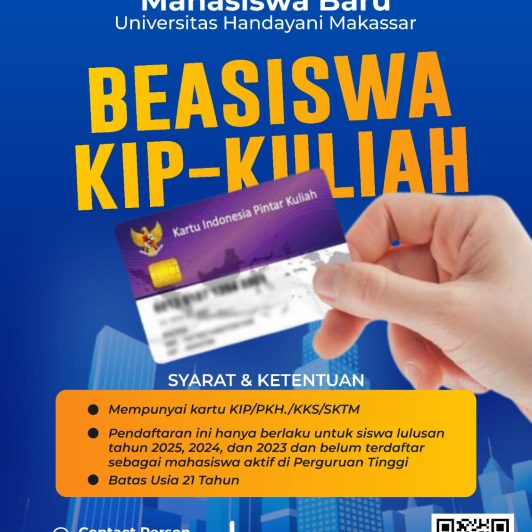

Pengumuman Penerimaan Mahasiswa Baru Tahun Akademik 2025/2026

Universitas Handayani Makassar membuka Penerimaan Mahasiswa Baru (PMB) untuk Tahun Akademik 2025/2026. Kami mengundang seluruh calon mahasiswa dari berbagai daerah untuk bergabung dan menjadi bagian dari keluarga besar UHM.

Tersedia berbagai program studi unggulan di bidang Teknik, Komputer, Ekonomi, dan Ilmu Sosial. Pendaftaran dilakukan secara online melalui website resmi UHM dan dibuka mulai 1 Juli 2025 hingga 30 September 2025.
Calon mahasiswa yang memiliki KIP-Kuliah dapat mendaftar dengan skema beasiswa penuh. Seleksi masuk akan dilakukan dalam beberapa gelombang, meliputi tes akademik dan wawancara.
Jangan lewatkan kesempatan untuk belajar di lingkungan akademik yang inovatif, berintegritas, dan adaptif terhadap dunia industri dan teknologi modern.
← Kembali ke Halaman Informasi